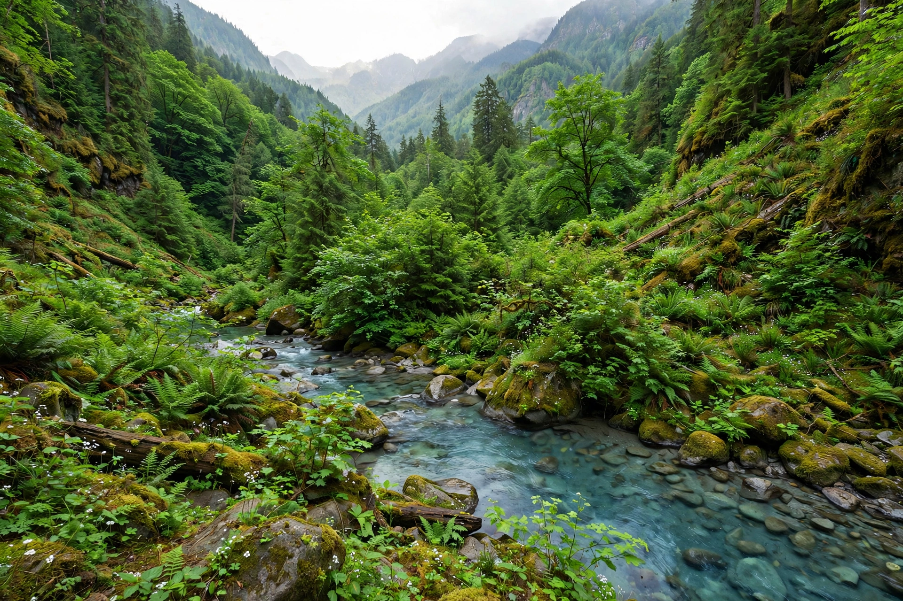

From Wikipedia, the free encyclopedia

Natural capital is the world's stock of natural resources, which includes geology, soils, air, water and all living organisms. Some natural capital assets provide people with free goods and services, often called ecosystem services, such as water catchment, erosion control and crop pollination by insects, which underpin the production of all other forms of economic capital.
The concept extends the economic notion of capital — resources that enable the production of more resources — to goods and services supplied by the natural environment. It is a key concept in ecological economics and in environmental accounting frameworks such as the UN System of Environmental-Economic Accounting.
The term was popularized by E. F. Schumacher in Small Is Beautiful (1973) and developed by Herman Daly, Robert Costanza and others. Costanza's 1997 Nature study estimated the value of the world's ecosystem services at roughly US$33 trillion per year. The 2021 Dasgupta Review, commissioned by the UK Treasury, argued that economic growth dependent on depleting natural capital is unsustainable.
Natural capital accounting attempts to measure stocks and flows of ecosystem goods and services in physical and monetary terms, so that degradation of nature appears in national statistics alongside GDP. Critics caution that assigning monetary values to nature may commodify ecosystems and overlook values that resist quantification.